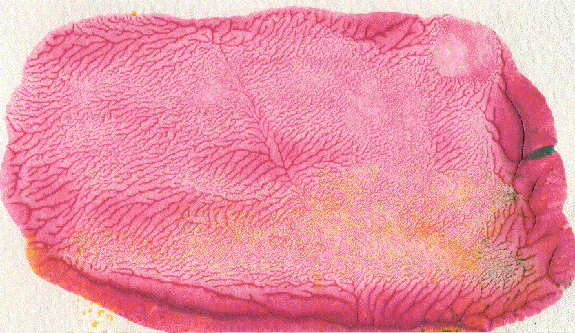
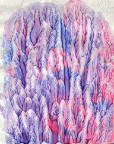

Fractal paint patterns are easily made by a process related to viscous fingering.
| Put some fairly viscous paint --- finger paint or oil paint from a tube work well --- on a piece of stiff paper fastened to a table. |
| Cover the paper with another piece of paper |
| Flatten and spread the paint by applying pressure to the top sheet |
| Pull the sheets apart. |
As the sheets separate, paint adheres to both the top and bottom, forming ridges between the papers.
With increasing distance between the papers, the paint ridges coalesce and a branching pattern appears.
As more and more ridges coalesce, a dendritic fractal forms. Here is an example.
|  |
| Click the picture to reduce. |
|  | Here are some examples, including recent student projects. |
| Here are some historical precedents from art. |